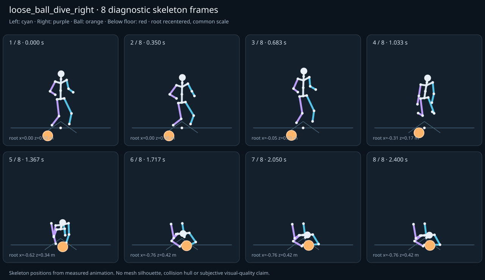

מה הוריד את הציון
- כניסה ויציאה מול המתנה: פער ב־יציאה מול המתנה; יחס חריגה 12.461 (אדום)
כיסוי: 100%. לא כל מדד חל על כל קליפ; הסטטוס והראיות מפורטים למטה.
שמונה פריימים
תצוגת שלד אבחונית שנבנתה מהפריימים הנמדדים. צד שמאל בכחול, ימין בסגול, כדור בכתום. מיקום השורש ממורכז לצפייה; מיקומו בעולם כתוב בכל פריים.

המדדים והראיות
| מדד | מצב | ערך | ציון | סף ופרטי מדידה |
|---|---|---|---|---|
| החלקת רגליים | ירוק | 0 height ratio | 100 | {
"definition": {
"label": "החלקת רגליים",
"unit": "height ratio",
"green": 0.01,
"yellow": 0.035,
"weight": 18,
"description": "Maximum horizontal sole displacement from the first sample of each declared support window, divided by character height. Inferred support is used only when no windows were supplied."
},
"value": 0.000046,
"status": "green",
"score": 99.91,
"evidence": {
"coordinateSpace": "authored reference world (simulation-owned)",
"supportSource": "declared",
"windows": 2,
"samples": 58,
"maxDriftMeters": 0.000078,
"p95SpeedMetersPerSecond": 0.002874,
"worst": {
"bone": "RightFoot",
"t": 0.45,
"start": 0,
"end": 0.466667,
"driftMeters": 0.000078
}
}
} |
| חדירה לרצפה | ירוק | 0 height ratio | 100 | {
"definition": {
"label": "חדירה לרצפה",
"unit": "height ratio",
"green": 0.005,
"yellow": 0.02,
"weight": 15,
"description": "Maximum depth of the supplied sole probe points and all skeletal joint centers below the declared floor plane, divided by height. Sole probes are not a mesh collision audit."
},
"value": 0.000059,
"status": "green",
"score": 99.76,
"evidence": {
"samples": 2900,
"floorY": 0,
"probeKind": "declared sole probes plus skeletal joint centers (no mesh surfaces)",
"maxDepthMeters": 0.000099,
"worst": {
"t": 0.45,
"bone": "LeftFoot",
"depthMeters": 0.000099,
"y": -0.000099
}
}
} |
| קפיצות פוזה | ירוק | 0.699 discontinuity ratio | 86 | {
"definition": {
"label": "קפיצות פוזה",
"unit": "discontinuity ratio",
"green": 1,
"yellow": 2.5,
"weight": 18,
"description": "Maximum adjacent 60 Hz-equivalent step: root-relative marker displacement / 0.04 height, root-relative rotation / 15 degrees, or root translation / 0.08 height. A fast continuous action can also exceed this screening threshold."
},
"value": 0.698787,
"status": "green",
"score": 86.02,
"evidence": {
"adjacentPairs": 144,
"observations": 2448,
"maxDegrees60Hz": 8.237402,
"maxMarkerStepHeight60Hz": 0.027951,
"maxRootStepHeight60Hz": 0.011139,
"worst": {
"ratio": 0.6987873497999958,
"t": 0.916667,
"previousTime": 0.9,
"bone": "LeftForeArm",
"markerStepHeight60Hz": 0.027951,
"degrees60Hz": 5.441286
}
}
} |
| חריגות אנטומיות | ירוק | 0 % affected frames | 100 | {
"definition": {
"label": "חריגות אנטומיות",
"unit": "% affected frames",
"green": 0.5,
"yellow": 3,
"weight": 14,
"description": "Percentage of frames with elbow or knee flexion above 165 degrees, neck bend above 80 degrees, or a segment length changing by more than 5%. Optional calibrated hinge checks detect reverse knee flexion above 8 degrees. Conservative marker limits do not diagnose axial joint twist."
},
"value": 0,
"status": "green",
"score": 100,
"evidence": {
"testedFrames": 145,
"affectedFrames": 0,
"checks": 2465,
"maxLimbFlexionDegrees": 118.165368,
"maxRelativeSegmentLengthChange": 0,
"hingeDirectionChecked": true,
"axialTwistChecked": false,
"violations": []
}
} |
| מגע בכדור | ירוק | 0 height ratio | 100 | {
"definition": {
"label": "מגע בכדור",
"unit": "height ratio",
"green": 0.015,
"yellow": 0.05,
"weight": 13,
"description": "Maximum absolute distance from the ball surface to the sampled, bone-transformed declared contact point, divided by height. Events are evaluated at their exact declared times by interpolation."
},
"value": 0.00034,
"status": "green",
"score": 99.55,
"evidence": {
"radiusMeters": 0.12,
"samples": 110,
"missed": [],
"contacts": [
{
"t": 1.616667,
"bone": "RightHand",
"gapMeters": 0.000575,
"signedGapMeters": 0.000575,
"centerDistanceMeters": 0.120575,
"contactPoint": [
-1.155296,
0.160461,
1.108022
],
"ballCenter": [
-1.035268,
0.16,
1.11949
],
"declaredLocalPoint": true
},
{
"t": 1.583333,
"bone": "RightHand",
"gapMeters": 0.00053,
"signedGapMeters": 0.00053,
"centerDistanceMeters": 0.12053,
"contactPoint": [
-1.149735,
0.160286,
1.104914
],
"ballCenter": [
-1.029759,
0.16,
1.116446
],
"declaredLocalPoint": true
},
{
"t": 1.65,
"bone": "RightHand",
"gapMeters": 0.000499,
"signedGapMeters": 0.000499,
"centerDistanceMeters": 0.120499,
"contactPoint": [
-1.156942,
0.160571,
1.108986
],
"ballCenter": [
-1.03699,
0.16,
1.120442
],
"declaredLocalPoint": true
},
{
"t": 1.55,
"bone": "RightHand",
"gapMeters": 0.000418,
"signedGapMeters": 0.000418,
"centerDistanceMeters": 0.120418,
"contactPoint": [
-1.140207,
0.160133,
1.099649
],
"ballCenter": [
-1.02035,
0.16,
1.111246
],
"declaredLocalPoint": true
},
{
"t": 1.683333,
"bone": "RightHand",
"gapMeters": 0.000318,
"signedGapMeters": 0.000318,
"centerDistanceMeters": 0.120318,
"contactPoint": [
-1.155134,
0.160533,
1.108022
],
"ballCenter": [
-1.03537,
0.16,
1.119547
],
"declaredLocalPoint": true
},
{
"t": 1.516667,
"bone": "RightHand",
"gapMeters": 0.00031,
"signedGapMeters": 0.00031,
"centerDistanceMeters": 0.12031,
"contactPoint": [
-1.127087,
0.160023,
1.092433
],
"ballCenter": [
-1.00734,
0.16,
1.104056
],
"declaredLocalPoint": true
},
{
"t": 1.716667,
"bone": "RightHand",
"gapMeters": 0.000132,
"signedGapMeters": 0.000132,
"centerDistanceMeters": 0.120132,
"contactPoint": [
-1.150679,
0.160364,
1.105541
],
"ballCenter": [
-1.031114,
0.16,
1.117195
],
"declaredLocalPoint": true
},
{
"t": 1.516667,
"bone": "LeftHand",
"gapMeters": 0.000068,
"signedGapMeters": -0.000068,
"centerDistanceMeters": 0.119932,
"contactPoint": [
-0.887984,
0.159853,
1.092315
],
"ballCenter": [
-1.00734,
0.16,
1.104056
],
"declaredLocalPoint": true
},
{
"t": 1.55,
"bone": "LeftHand",
"gapMeters": 0.000067,
"signedGapMeters": -0.000067,
"centerDistanceMeters": 0.119933,
"contactPoint": [
-0.900991,
0.159872,
1.099525
],
"ballCenter": [
-1.02035,
0.16,
1.111246
],
"declaredLocalPoint": true
},
{
"t": 1.583333,
"bone": "LeftHand",
"gapMeters": 0.000064,
"signedGapMeters": -0.000064,
"centerDistanceMeters": 0.119936,
"contactPoint": [
-0.910394,
0.15989,
1.104756
],
"ballCenter": [
-1.029759,
0.16,
1.116446
],
"declaredLocalPoint": true
},
{
"t": 1.616667,
"bone": "LeftHand",
"gapMeters": 0.000052,
"signedGapMeters": -0.000052,
"centerDistanceMeters": 0.119948,
"contactPoint": [
-0.915889,
0.159919,
1.107822
],
"ballCenter": [
-1.035268,
0.16,
1.11949
],
"declaredLocalPoint": true
},
{
"t": 1.65,
"bone": "LeftHand",
"gapMeters": 0.000037,
"signedGapMeters": -0.000037,
"centerDistanceMeters": 0.119963,
"contactPoint": [
-0.917596,
0.159956,
1.108767
],
"ballCenter": [
-1.03699,
0.16,
1.120442
],
"declaredLocalPoint": true
},
{
"t": 1.883333,
"bone": "RightHand",
"gapMeters": 0.00003,
"signedGapMeters": 0.00003,
"centerDistanceMeters": 0.12003,
"contactPoint": [
-1.122308,
0.159977,
1.089658
],
"ballCenter": [
-1.002872,
0.16,
1.101587
],
"declaredLocalPoint": true
},
{
"t": 1.916667,
"bone": "RightHand",
"gapMeters": 0.000029,
"signedGapMeters": 0.000029,
"centerDistanceMeters": 0.120029,
"contactPoint": [
-1.120276,
0.159989,
1.088544
],
"ballCenter": [
-1.00084,
0.16,
1.100464
],
"declaredLocalPoint": true
},
{
"t": 1.95,
"bone": "RightHand",
"gapMeters": 0.000026,
"signedGapMeters": 0.000026,
"centerDistanceMeters": 0.120026,
"contactPoint": [
-1.119542,
0.159994,
1.088145
],
"ballCenter": [
-1.000109,
0.16,
1.10006
],
"declaredLocalPoint": true
},
{
"t": 1.683333,
"bone": "LeftHand",
"gapMeters": 0.000025,
"signedGapMeters": -0.000025,
"centerDistanceMeters": 0.119975,
"contactPoint": [
-0.915969,
0.15999,
1.107832
],
"ballCenter": [
-1.03537,
0.16,
1.119547
],
"declaredLocalPoint": true
},
{
"t": 1.85,
"bone": "RightHand",
"gapMeters": 0.000023,
"signedGapMeters": 0.000023,
"centerDistanceMeters": 0.120023,
"contactPoint": [
-1.125985,
0.159959,
1.091684
],
"ballCenter": [
-1.006558,
0.16,
1.103624
],
"declaredLocalPoint": true
},
{
"t": 1.983333,
"bone": "RightHand",
"gapMeters": 0.000022,
"signedGapMeters": 0.000022,
"centerDistanceMeters": 0.120022,
"contactPoint": [
-1.119429,
0.159993,
1.088082
],
"ballCenter": [
-1,
0.16,
1.1
],
"declaredLocalPoint": true
},
{
"t": 1.716667,
"bone": "LeftHand",
"gapMeters": 0.000018,
"signedGapMeters": -0.000018,
"centerDistanceMeters": 0.119982,
"contactPoint": [
-0.911712,
0.160008,
1.105414
],
"ballCenter": [
-1.031114,
0.16,
1.117195
],
"declaredLocalPoint": true
},
{
"t": 1.75,
"bone": "RightHand",
"gapMeters": 0.000018,
"signedGapMeters": 0.000018,
"centerDistanceMeters": 0.120018,
"contactPoint": [
-1.144547,
0.160166,
1.102088
],
"ballCenter": [
-1.025109,
0.16,
1.113876
],
"declaredLocalPoint": true
}
],
"contactDetailsTruncated": true,
"coordinateSpace": "authored reference world (simulation-owned)"
}
} |
| כניסה ויציאה מול המתנה | אדום | 12.461 continuity ratio | 0 | {
"definition": {
"label": "כניסה ויציאה מול המתנה",
"unit": "continuity ratio",
"green": 1,
"yellow": 3,
"weight": 10,
"description": "Worst entry/exit mismatch to the best matching idle phase: RMS marker error / 0.04 height, RMS bone rotation / 25 degrees, or RMS endpoint velocity error / 0.75 height per second. Horizontal root translation is aligned; root height and body pose remain measurable."
},
"value": 12.460971,
"status": "red",
"score": 0,
"evidence": {
"entry": {
"ratio": 2.1572748704172624,
"t": 0,
"idleTime": 2.166667,
"markers": 17,
"rmsPositionHeight": 0.05535,
"rmsRotationDegrees": 53.931872,
"rmsVelocityHeightPerSecond": 0.008468,
"velocityEvaluated": true
},
"exit": {
"ratio": 12.460970905116207,
"t": 2.4,
"idleTime": 0,
"markers": 17,
"rmsPositionHeight": 0.498439,
"rmsRotationDegrees": 96.157535,
"rmsVelocityHeightPerSecond": 0.007409,
"velocityEvaluated": true
},
"worstEndpoint": "exit",
"alignment": "horizontal root translation; raw asset poses used when provided"
}
} |
| מהירות גוף מול צעדים | לא חל | — relative speed error | — | {
"definition": {
"label": "מהירות גוף מול צעדים",
"unit": "relative speed error",
"green": 0.2,
"yellow": 0.5,
"weight": 8,
"description": "Relative difference between average root travel speed and the median backward support-foot sweep speed relative to the root. Cadence and implied stride lengths are also reported. In-place clips need an explicit reference travel scenario; stationary actions are not scored as locomotion."
},
"value": null,
"status": "not-applicable",
"score": null,
"reason": "This action is not declared locomotion.",
"evidence": {}
} |
| סימטריה | ירוק | 0.021 relative mismatch | 86 | {
"definition": {
"label": "סימטריה",
"unit": "relative mismatch",
"green": 0.03,
"yellow": 0.1,
"weight": 4,
"description": "Maximum bilateral segment-length mismatch. Looping locomotion additionally compares reflected half-cycle leg markers; explicit pose symmetry compares simultaneous bilateral markers. One-sided actions retain unscored motion diagnostics, so a valid kick or dribble arm is not penalized for intentional asymmetry."
},
"value": 0.020473,
"status": "green",
"score": 86.35,
"evidence": {
"mode": "mirrored clip pair",
"modeSource": "structural default for intentional asymmetry",
"structuralMismatch": 0,
"segments": [
{
"segment": "Arm-ForeArm",
"mismatch": 0
},
{
"segment": "ForeArm-Hand",
"mismatch": 0
},
{
"segment": "UpLeg-Leg",
"mismatch": 0
},
{
"segment": "Leg-Foot",
"mismatch": 0
}
],
"motionRmsHeight": 0.020473,
"worstMotion": {
"t": 0.366667,
"errorHeight": 0.03327
},
"bilateralPoseRmsHeightUnscored": 0.064256,
"note": "One-sided authored actions are checked for structural symmetry only."
}
} |